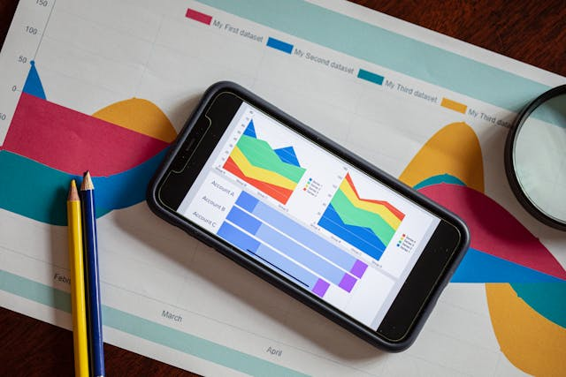

Analista de Dados
Rodrigo Souza
Profissional dedicado em análise de dados, com habilidades sólidas em desenvolvimento de relatórios, dashboards e automações, pronto para transformar dados em decisões estratégicas e impulsionar resultados.
Linguagens e Framework:
Sobre
Formação Acadêmica
-
Análise e Desenvolvimento de Sistemas
Instituto Federal do Espírito Santo (2025 - 2028)
-
Engenharia Química
Universidade Federal do Espírito Santo (2016 - 2021)
- Análise e resolução de problemas complexos
- Tomada de decisão baseada em dados
- Modelagem e otimização de processos
- Trabalho em equipe multidisciplinar
- Uso de softwares de simulação e ferramentas computacionais
- Capacidade de inovação e pesquisa aplicada
- Analisar e modelar problemas para propor soluções computacionais eficientes
- Desenvolver e manter sistemas com foco em qualidade, escalabilidade e usabilidade
- Comunicar ideias técnicas de forma clara para públicos diversos
- Aprender continuamente novas linguagens, frameworks e ferramentas
- Trabalho multidisciplinar com aplicação de metodologias ágeis
Contato
Redes Sociais
Entre em contato para discutir como posso ajudar a transformar seus dados em insights valiosos!
Formulário de Contato
Projetos

Projeto 1
Desenvolvimento de dashboards interativos para análise de vendas.

Projeto 2
Automação de relatórios financeiros utilizando Python.
Projeto 3
Modelagem e otimização de processos comerciais.